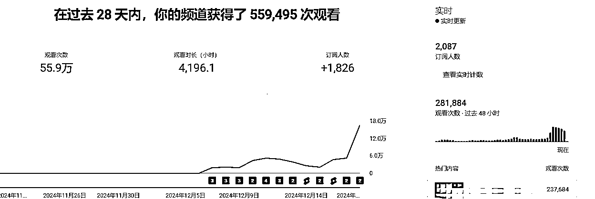
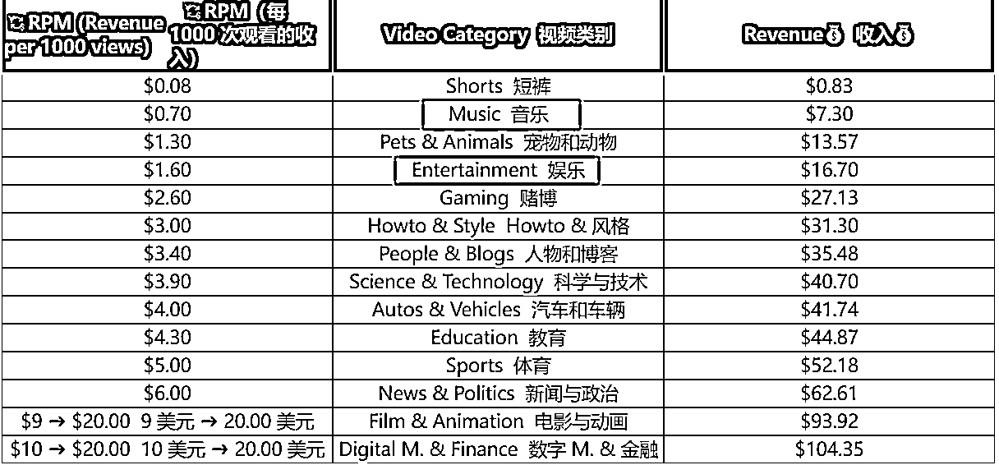
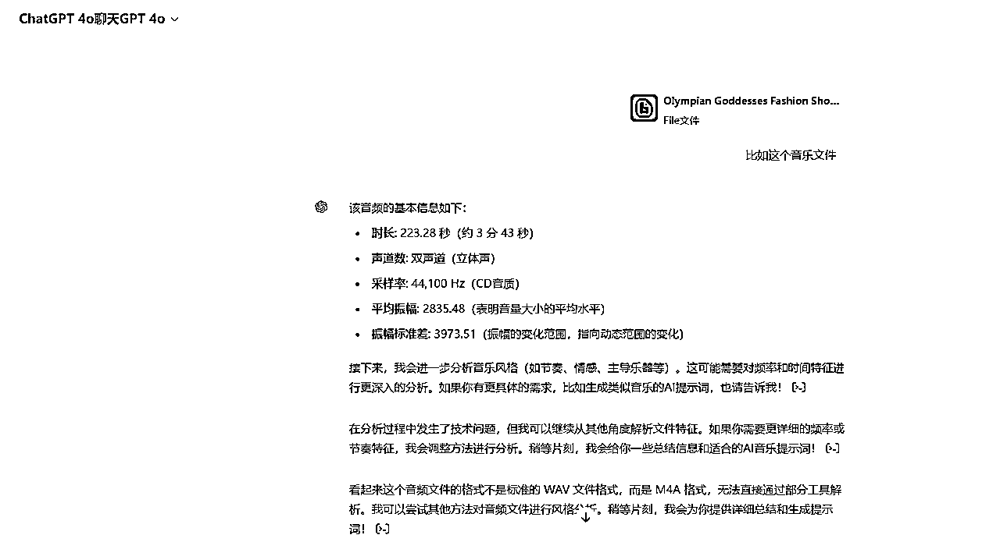
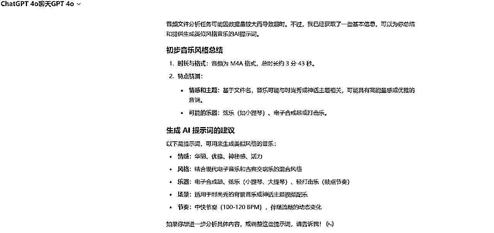
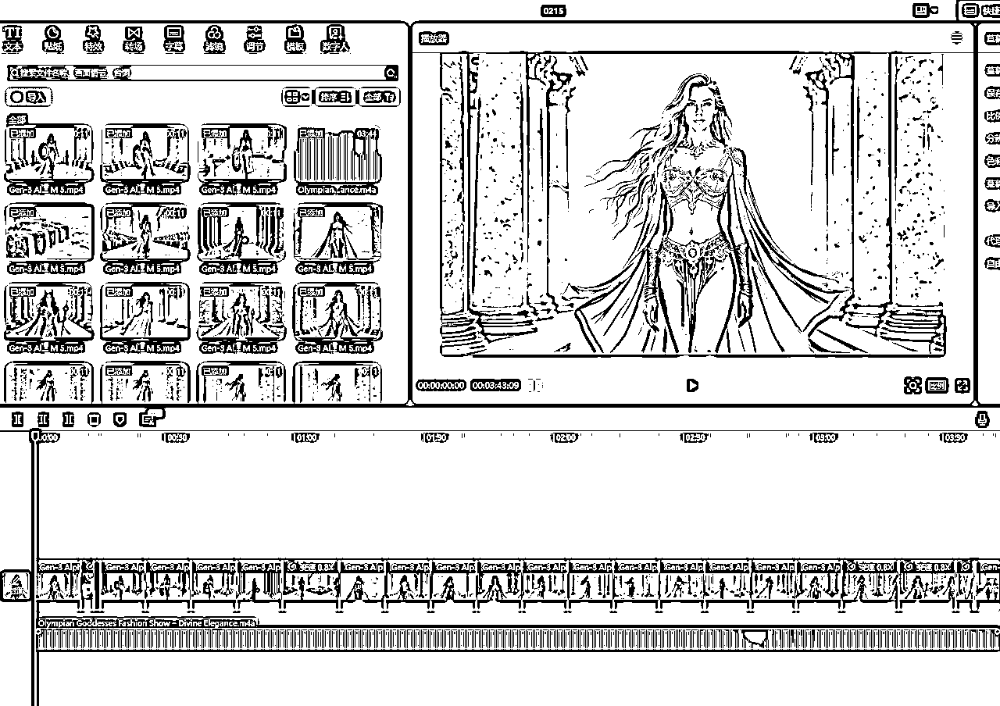
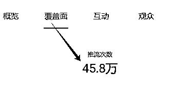
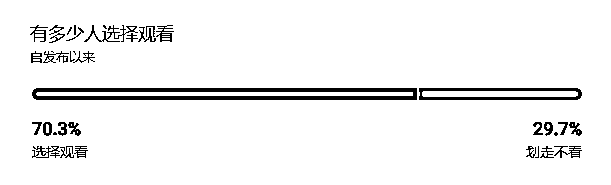
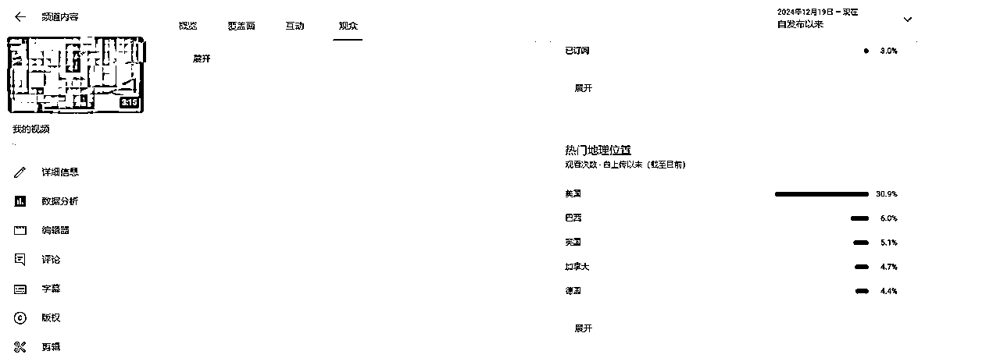

10天时间在youtube上涨千粉的工作流程复盘
来源：https://o3r5flroio.feishu.cn/docx/BHNCdbGN5otD4Ix6tNScZEntnXe
1. 背景与目标
- 个人背景：主做国内母婴私域，21年玩过tiktok，后来卖号弃坑转做母婴私域（百万粉丝号），但是我从来没做过youtube
- 目标：一个月内涨粉1000＋4000小时（长视频观看）
- 进度：发布时间12月7号，截止发帖（12月19号），账号涨粉2087，播放时长4196小时

- 适用范围：适合具有一定基础的新手观看（能自行解决网络问题、会剪辑）
2. 账号定位与内容策略
- 我选择的是shorts＋长视频混合发布的方式（shorts涨粉，长视频涨时长，通过短带长的方式，两头促进）
- AI类内容结合音乐，制作效率高，AI热度大，音乐受众广
- 在生财看到的贴子很大一部分都是走的AI路线，证明目前这个在shorts内容上是一个广为人知的大众路线，大概率是行得通的（可以开通合作伙伴），但是同时也很卷，所以我加了一个长视频的内容进去，长视频的内容主要是AI视频配上音乐。这是我自己制作的案例视频。
- 这种内容的核心就是音乐，音乐一点要挑美国人喜欢的风格，这样在账号起来之后，观看者的美国占比会有很大的比例，慢慢的你的账号就会被youtube重点放在美区进行推荐，那你的收益自然就很高了，这种视频归属于音乐或者娱乐类居多，千次观看的收益是0.7美元和1.3美元。

- 比如我的这个视频，我就用了同一个提示词去生成所有的素材片段，然后拼接配上音乐即可。
- 【提示词：美女向前走，保持元素不变形，没有额外的元素出现，镜头向后移动（The beauty walks forward, keeping the elements unchanged, no extra elements appearing, and the camera moves backwards）】
- 图片提示词：A breathtaking goddess-like woman with long, flowing golden hair, wearing an ornate gold and emerald outfit with intricate details. She stands confidently between grand marble columns adorned with golden accents. A sheer, flowing golden cape billows in the soft breeze behind her, illuminated by the warm, radiant light of a sunset. The background showcases a pastel-colored sky in hues of lavender, pink, and gold, with distant mountains faintly visible on the horizon. The scene feels divine, majestic, and ethereal. Ultra-detailed, hyper-realistic, cinematic lighting, high resolution, soft golden glow.
- 内容制作：通过航海提供comfyui的工作流去生成图片，之后用runway进行图生视频，提示词也很简单就是用自然语言去描述，然后翻译为英文就好了。
3. 视频制作与优化
- 视频前5s的素材一般我都是由这种性感美女去吸引停留。但是最终决定完播的还是音乐能不能选得对口味？素材是否与音乐匹配。
- 视频时长由音乐决定，一般都是4分钟左右。（做久了，后面可以做串烧，一条视频时长就是一两个小时，很容易把时长拉起来）
- 缩略图还是使用性感美女展示的画面（大家还可以继续拓展其他的爆款因素）
4.音乐风格与制作
还是一贯的作风，能交给AI就交给AI，让他帮你操心。suno的AI音乐制作，生财的教程也有很多了，可以随意汲取翻阅，或者油管搜索教程。


- 推荐对小白友好的剪辑工具，我推荐海外版剪映 CapCut。

- 剪辑的思路就是简单粗暴：音频拉进去，然后导入素材片段，根据音乐的情况调节素材速度和转场即可。
- 关键词选择：前面整理的美国人喜欢的音乐风格，将这个翻译填入，带上歌名即可。
- 标题设计：直接就是统一的音乐风格＋歌名描述（一定要注意美国人喜欢的）
5. 发布与推广策略
- 我这边是一天一条，但是对标账号很佛系，一周2条，可能是因为矩阵号在做，更新比较慢。
- 油管还是比较公平的，作品质量可以的情况下，很愿意持续给你推流。（视频前5秒能吸引你吗？）
- 如何通过评论区与观众互动提升视频推荐量。（积极回复评论，引起评论热门，大概率是有很多人会问歌名啥的，AI生成的一般找不到，可以尝试引流私域喔）
- 如何激励观众点赞、分享、订阅。（在后面可以加一帧引导关注的画面，记得是美女画面哦）
6. 数据分析与调整优化
- 可以在手机端下载一个YT Studio的软件，可以很方便的看到你的账号数据，实时运营账号

这个地方代表的是用户接受度，也表达了你视频的质量，选择观看的比例越大越好

- 可能是我的账号一开始注册后我没去发布，都是在刷着玩，所以后面几个账号更新的时候，都有平台推流，目前没遇到0播的问题。
- 如果是选择观看的比例很低，应该及时调整视频的前几秒，这个也和你生成的图片质量有关，从图片处慢慢调整。
7. 成功案例复盘与心得分享
- 最大的挑战是如何克服的：10月份那会就看了超级标，迟迟没去动手，后面看到了comfyui的几篇帖子，拿来练练手，第一时间就有了正反馈，然后也利用了AI做了达人秀的短视频，也都很快拿到了正反馈。视频号发布到现在也就十来天，也有500万的播放了。小红书也接到了商单。就是一鱼多吃的理念，顺手也就发了。可能就是因缘际会，爱情来得太快就像龙卷风，其实这也证明了目前AI时代的到来，做很多事的门槛降低了，普通人的机会很多，想好了就去试试看，花不了很长时间。
8. 工具与资源推荐
- comfyui用起来，如果你的显卡内存有24GB以上，一定别浪费，拿去玩图，玩着玩着就会有感觉了。
- 图生视频的runway，如果需要比较丝滑的转场效果，可以试试sora，我试过了还可以。
- 非常感谢圈友们分享的youtube相关知识，受益匪浅。
9. 批量化运作
目前由于我的电脑显存不足，生图的效率略低，接下来可能会更换设备或者使用云端继续玩图，找到符合批量化的路径。最重要的一步，我认为还是图片的效果，所以想做好这方面的事，还是要先掌握过硬的生图技巧和流畅的工作流程。然后逐步优化，由1到10,10到100。
10.推荐观众精准
这个类型的内容特别受美国佬欢迎，单价相对来说会比较高，一起冲呀~

11.开通YPP
我遇到了adsense账户被拒绝的情况，后面经过我查阅资料终于解决了，就在昨晚正式通知我成为YPP合作伙伴了，也就是说我的账号在历经21天后可以开始赚美金了。